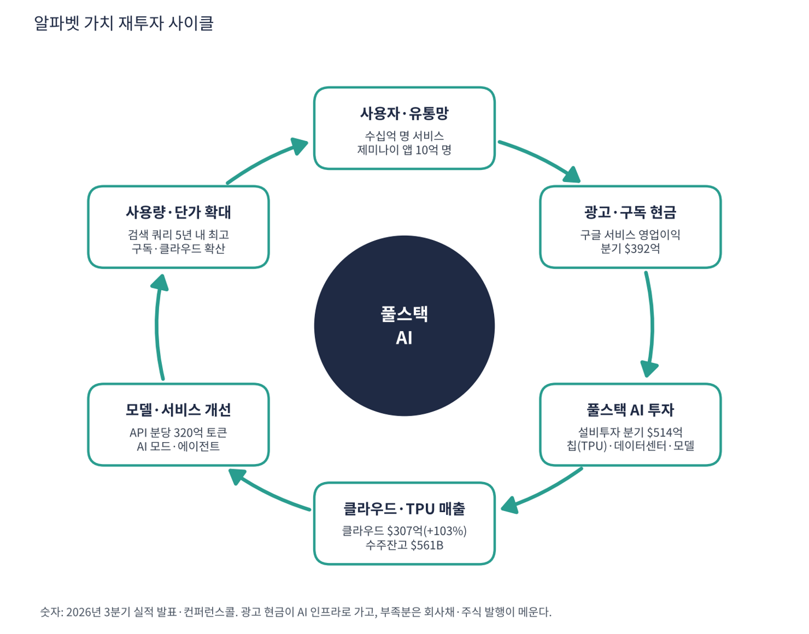

알파벳은 구글의 지주회사다. 검색·유튜브·안드로이드·크롬·지메일·지도처럼 사용자가 수십억 명인 서비스에서 광고로 돈을 벌고, 클라우드(GCP·워크스페이스·TPU 칩)로 기업에 AI 인프라를 판다. 자율주행 웨이모 같은 장기 프로젝트는 '기타 투자(Other Bets)'로 묶는다. 2년 전에는 '광고 회사'였지만, 이제 광고로 번 돈을 AI 인프라에 쏟아붓는 회사로 성격이 바뀌고 있다.
| 항목 | 내용 |
|---|---|
| 종목 | Alphabet Inc. 클래스 A(GOOGL)·클래스 C(GOOG) · NASDAQ · 1998년 설립 |
| 시가총액 | 약 $3조 4,720억 · TTM PER 14.9배(보유 지분 평가이익 포함) · 배당수익률 0.30% (트레이딩뷰, 11/6 종가 $284.78) |
| 최근 분기(26.3Q) | 매출 $1,276억(+25%, 13분기 연속 두 자릿수 성장), 영업이익 $406억(31.8%), 순이익 $262억, EPS $2.12 |
| 2026년 설비투자 가이던스 | $1,950~2,050억, 2027년은 "크게 증가"(회사 발표) |
| 직원 수 | 204,757명(+7.7%) |
| 다음 실적 | 26.4Q 실적: 2027년 1월 말~2월 초 발표 예상 |
| 직책 | 인물 | 역할·특징 |
|---|---|---|
| CEO | 순다르 피차이 | 2015년부터 구글 CEO, 2019년부터 알파벳 CEO. '모바일 시대처럼 경험을 먼저 만들고 수익화는 그다음'이라는 원칙을 반복 |
| CFO | 아낫 아쉬케나지 | 2024년 취임. 회사채·주식 발행과 설비투자 균형, 클라우드 마진 가이던스 담당 |
| 클라우드 CEO | 토머스 쿠리안 | 구글 클라우드를 3위 사업자에서 이익률 36%의 고성장 사업으로 키운 인물. TPU 외부 판매 주도 |
| 최고사업책임자 | 필립 쉰들러 | 광고·검색 수익화 총괄. AI 모드 안 광고 도입 담당 |
| 구글 딥마인드 CEO | 데미스 허사비스 | 제미나이 모델 개발을 이끄는 AI 연구 수장 |
경영 스타일: '풀스택으로 직접 쥐고, 돈은 나중에 번다'. 피차이 CEO는 3분기 콜에서 칩부터 서비스까지 이어지는 "깊은 풀스택 접근"이 사업 전체의 모멘텀을 만든다고 반복했다. AI 오버뷰·AI 모드·기존 검색을 하나로 합치고 예약·구매 같은 '일 처리'까지 에이전트가 하게 만드는 것이 목표이며, 수익화는 사용자 경험이 자리잡은 뒤에 붙인다는 입장이다. 동시에 회사는 2026년 처음으로 대규모 회사채(약 $600억)와 보통주·전환우선주($496억)를 발행했다. 번 돈 이상으로 투자하겠다는 결정이고, 그만큼 수요(수주잔고)에 대한 확신이 강하다는 뜻이다.
자체 AI 칩 TPU(8세대), 자체 CPU(Axion), 제미나이 4 모델군, 세계 모델 지니, 데이터센터와 클라우드, 수십억 명이 쓰는 서비스까지 한 회사에 있다. 층 사이의 비용을 내부화해 AI를 가장 싸게 만들고 가장 넓게 배포하는 구조다.
10-K는 1998년 이후 회사가 사람들이 답을 찾도록 돕는 회사에서 일을 해내도록 돕는 회사로 진화했다고 쓴다. 에이전트가 검색·제미나이 앱·크롬·안드로이드·워크스페이스를 잇는 통합 계층이 되는 것이 방향이다.
| 분기 | 매출 | YoY | 영업이익 | 이익률 | 순이익 | 영업현금 | 설비투자 | FCF | EPS | 특이 사항 |
|---|---|---|---|---|---|---|---|---|---|---|
| 24.4Q | $965억 | +12% | $310억 | 32.1% | $265억 | $391억 | $143억 | $248억 | $2.15 | |
| 25.1Q | $902억 | +12% | $306억 | 33.9% | $345억 | $362억 | $172억 | $190억 | $2.81 | 지분 평가이익 $112억 |
| 25.2Q | $964억 | +14% | $313억 | 32.5% | $282억 | $277억 | $224억 | $53.0억 | $2.31 | CapEx 급증 시작 |
| 25.3Q | $1,023억 | +16% | $312억 | 30.5% | $350억 | $484억 | $240억 | $244억 | $2.87 | 분기 매출 첫 $1,000억 |
| 25.4Q | $1,138억 | +18% | $359억 | 31.5% | $345억 | $524억 | $279억 | $245억 | $2.82 | 연 매출 $4,000억 돌파, 웨이모 보상 $21억 |
| 26.1Q | $1,099억 | +22% | $397억 | 36.1% | $626억 | $458억 | $357억 | $101억 | $5.11 | 회사채 $311억 발행 |
| 26.2Q | $1,198억 | +24% | $408억 | 34.1% | $1,121억 | $391억 | $449억 | -$58.0억 | $9.11 | 지분 평가이익 $980억, 주식 $496억 조달, FCF 첫 마이너스 |
| 26.3Q | $1,276억 | +25% | $406억 | 31.8% | $262억 | $423억 | $514억 | -$91.0억 | $2.12 | 스페이스X 평가손 -$82억, EC 과징금 $52억 지급 |


흐름 요약: 매출 성장률은 12% → 25%로 7분기 연속 빨라졌고, 영업이익도 분기 $310억 → $406억(+30%)으로 꾸준히 올랐다. 반면 순이익은 실적을 보여주지 못한다. 2026년 순이익은 $626억 → $1,121억 → $262억으로 널뛰었는데, 영업과 무관한 보유 지분(비상장·상장 주식) 평가손익이 들어오기 때문이다. 사업의 실력은 영업이익으로 봐야 한다. 더 중요한 변화는 현금이다. 설비투자는 2년 만에 분기 $143억 → $514억(3.6배)이 되어 26.2Q부터 잉여현금흐름이 두 분기 연속 마이너스(-$59억, -$91억)다. 분기 말 현금·유가증권은 $2,651억(이 중 상장 지분 $904억), 장기 부채는 $1,251억이다.
| 매출원 | 돈을 버는 방식 | 26.3Q 매출 | 비중 | YoY |
|---|---|---|---|---|
| 검색·기타 | 검색 광고 클릭당 과금(지메일·지도·플레이 광고, AI 오버뷰·AI 모드 광고 포함) | $634억 | 50% | +12% |
| 유튜브 광고 | 동영상·쇼츠 광고, 거실 TV 시청 | $112억 | 9% | +9% |
| 구글 네트워크 | 다른 사이트·앱에 광고를 대신 붙여 주는 수수료 | $75억 | 6% | +1% |
| 구독·플랫폼·기기 | 유튜브 프리미엄·구글 원(AI 요금제), 플레이 수수료, 픽셀 | $143억 | 11% | +11% |
| 구글 클라우드 | GCP 사용료, 제미나이 엔터프라이즈·워크스페이스, 보안, TPU 시스템 판매 | $307억 | 24% | +103% |
| 기타 투자 | 웨이모·아이소모픽 등 | $4억 | 0.3% | – |

광고 회사에서 '광고 + 인프라' 회사로. 1년 전(25.3Q) 광고는 매출의 72%, 클라우드는 15%였는데 26.3Q에는 광고 64%, 클라우드 24%다. 구글 서비스 영업이익률은 약 41%로 현금 기계 역할을 하고, 클라우드는 이익률 36%(2년 전 17.5%)의 성장 엔진이다. 분기 영업이익으로 보면 구글 서비스는 $400억 안팎에서 정체했고, 클라우드는 $21억 → $111억으로 2년 만에 5배가 되어 회사 전체 영업이익 증가분의 대부분을 만든다.
| 보조 지표 | 내용 |
|---|---|
| TAC(트래픽 획득 비용) | 애플·삼성·통신사 등에 지급하는 수수료 $164억(광고 매출의 약 20%). 기본 검색 계약 소송 결과가 이 구조를 흔들 수 있음 |
| 클라우드 수주잔고 | $561B. 향후 24개월에 55% 남짓이 매출로 전환될 전망(연 약 $1,500억 — 현재 클라우드 연 환산 매출 약 $1,230억보다 큼) |
| TPU 시스템 판매 | 칩이 아니라 하드웨어·네트워크·소프트웨어를 묶은 시스템. 재고를 먼저 쌓고(현금 유출) 납품 때 매출 인식 → 매출은 2027년 본격화, 이익률은 서비스보다 낮을 가능성 |
10-K는 창업 미션을 그대로 내건다: "to organize the world's information and make it universally accessible and useful"(세상의 정보를 정리해 누구나 쓸 수 있게 한다). 행동에서 읽히는 목적은 'AI 시대의 인프라와 인터페이스를 동시에 장악하는 것'이다.
| 축 | 내용 |
|---|---|
| 풀스택 AI | 칩(TPU) → 인프라(클라우드) → 모델(제미나이) → 서비스(검색·유튜브·안드로이드) 모든 층을 직접 보유하고 각 층에서 돈을 번다 |
| 검색에서 에이전트로 | 정보를 보여주는 검색에서 예약·구매·작성을 대신 하는 에이전트로. 범용 상거래 프로토콜(UCP)·유니버설 카트 도입 |
| 인프라를 모두에게 판다 | TPU와 클라우드를 경쟁 AI 회사에도 판매(앤스로픽, 애플 등 약 100개 고객). 누가 이기든 인프라 매출은 남김 |
| 문샷 옵션 | 웨이모(미국 15개 도시), 아이소모픽(AI 신약), 양자컴퓨팅, 우주 데이터센터. 분기 손실 $20억 수준(회사 이익의 약 5%) |


위: 트레이딩뷰 주봉 데이터로 재구성(10·20·40주선). 아래: 트레이딩뷰 공개 차트 일봉 캡처(작도 숨김, 이동평균선·볼린저밴드만 표시).
| 이동평균 | 값 | 종가 대비 | 해석 |
|---|---|---|---|
| 5일선 | $283.06 | +0.6% | 실적 급락 후 일주일째 횡보 |
| 20일선 | $317.44 | -10.3% | 10/28 갭 하락 직전 가격대, 1차 회복 목표 |
| 50일선 | $332.93 | -14.5% | 200일선 아래로 내려옴(데드크로스) |
| 100일선 | $341.52 | -16.6% | 6~10월 박스권 중심 |
| 200일선 | $339.51 | -16.1% | 평평하게 꺾이는 중 |
50·100·200일선이 $333~342에 한 덩어리로 모여 있다. 6~10월 박스권의 중심이었고, 10/28 실적 발표 다음 날 -12.6% 갭 하락으로 박스 하단을 뚫었다. 이 이평선 밀집대가 앞으로 두꺼운 저항이 된다.
| 규칙 | 기준 | 현재 값 | 신호 |
|---|---|---|---|
| 장기 추세 필터 | 종가 vs 200일선 | $284.78 < $339.51 | 매도 |
| 중장기 교차 | 50일선 vs 200일선 | $332.93 < $339.51 | 매도 |
| 단기 교차 | 20일선 vs 50일선 | $317.44 < $332.93 | 매도 |
| 돈키언 채널 | 55일 고가 $364.17 / 저가 $276.92 | 중간값 $320.55 아래 | 매도 |
| 1개월 모멘텀 | 21거래일 수익률 | -18.2% (기준 $348.29) | 매도 |
| 3개월 모멘텀 | 63거래일 수익률 | -20.3% (기준 $357.52) | 매도 |
| 6개월 모멘텀 | 126거래일 수익률 | -28.9% (기준 $400.80) | 매도 |
| 12개월 모멘텀 | 252거래일 수익률 | +0.2% (기준 $284.31) | 매수 |
| 종합 (8개 평균) | -0.75 | 강한 매도 |
해석: 8개 신호 중 7개 매도, 1개 매수(12개월 모멘텀 +0.2%, 사실상 경계선). 종가가 $284.3 아래로 마감하면 12개월 신호도 매도가 되어 -1.00이 된다. 1년 전 주가가 11월 중순~하순에 $276~320으로 올라가므로 가격이 그대로여도 11월 말이면 신호가 바뀔 수 있다. 14일 ATR $11.30 (4.0%).
| 가격 | 무엇이 바뀌나 | 의미 |
|---|---|---|
| $284.3 이탈 | 12개월 모멘텀 매도 전환 | 점수 -1.00, 장기 모델까지 매도 |
| $317 ~ 320 | 20일선 회복 + 돈키언 중간값 + 10/28 갭 메우기 | 단기 반등의 최대치로 볼 만한 자리 |
| $333 ~ 348 | 50·200일선 회복 + 1개월 모멘텀 | 추세 복귀 확인 |
| $358 / $401 | 3개월 / 6개월 모멘텀 기준가 | 5월 고점권, 단기 회복 어려움 |
| $271 이탈 | 55일 신저점 + 1년 최저가 | 추가 기계적 매도, 다음 지지 $240 |
| 구분 | 가격대 | 근거 |
|---|---|---|
| 저항 3 | $333 ~ 342 | 50·100·200일선 밀집, 6~10월 박스 중심 |
| 저항 2 | $317 ~ 325 | 20일선, 10/28 종가 $325(갭 상단), 피보나치 61.8% $324 |
| 저항 1 | $296 ~ 302 | 11/4~5 반등 고점 $296, 피보나치 78.6% $301 |
| 지지 1 | $271 ~ 277 | 2025년 11월·2026년 3월·10월 말~11월 초 세 번 지켜낸 삼중 바닥 |
| 지지 2 | $264 이하 | 삼중 바닥 아래 ATR 1배. 이탈 시 1년 지지 구조 붕괴 |
| 지지 3 | $233 ~ 242 | 2025년 9월 갭 상승 구간 |
다음 실적(2027년 1월 말~2월 초)까지는 $271~325 박스권 가능성이 가장 높다. 이번 하락은 '검색 둔화 + 현금흐름 악화'라는 펀더멘털 질문에서 시작됐으므로 이평선 밀집대($333~342)를 단번에 회복하기는 어렵다. 삼중 바닥($271~280)에서 종가 지지를 확인하면 계획 비중의 30~40%를 분할 진입(진입 $278·손절 $264 기준 손익비 1:1.7~1:3.4), $301에서 40% 익절, $317~325에서 40% 익절, 나머지는 $340 돌파를 보고 판단한다. 주봉 종가가 $265 아래로 마감하면 '바닥 확인' 시나리오는 폐기한다.
| 악재 요인 | 내용 | 강도 |
|---|---|---|
| 검색 성장 둔화 | 검색 매출 성장률 19%(1Q) → 17% → 12%. 3Q 발표 다음 날 주가 -12.6%. AI 답변이 클릭을 줄이면 가장 큰 이익원이 흔들림 | 높음 |
| 현금흐름 악화·희석 | FCF 2분기 연속 마이너스, 2027년 설비투자 "크게 증가". 회사채·주식 발행이 늘어 이자 부담과 주식 희석 확대 | 높음 |
| 반독점·규제 | 기본 검색 계약(TAC $164억/분기) 관련 소송, EU 과징금($52억 지급 사례) | 중간 |
| 클라우드 마진 하락 | 공급 부족으로 외부 컴퓨팅을 임차해 4분기 마진 단기 하락 예고. TPU 하드웨어 판매 이익률은 서비스보다 낮을 가능성 | 중간 |
| 지분 평가손익 | 상장 지분 $904억(스페이스X 등) 가격 변동이 순이익을 $-82억~+$980억까지 흔듦 | 중간 |
| 구매 약정 | 미래 구매 약정 $9,240억(일부 조정 가능). 수요가 꺾이면 고정비 부담 | 참고 |
| 티커 | 회사 | 시가총액 | PER(TTM) | PEG | P/S | EPS 성장(YoY) |
|---|---|---|---|---|---|---|
| GOOGL | 알파벳 | $3,472B | 14.9배 | 0.16 | 7.32배 | +89% |
| META | 메타 | $1,560B | 20.8배 | 0.70 | 6.46배 | +30% |
| MSFT | 마이크로소프트 | $3,940B | 27.7배 | 0.73 | 10.90배 | +36% |
| AMZN | 아마존 | $2,804B | 21.0배 | 0.27 | 3.37배 | +75% |
| AAPL | 애플 | $4,975B | 38.2배 | 1.86 | 10.34배 | +20% |
| ORCL | 오라클 | $351B | 18.2배 | 0.39 | 4.98배 | +48% |
알파벳 PER 14.9배·PEG 0.16은 보유 지분 평가이익이 순이익에 들어간 값이다. 영업이익 기준으로는 PER 약 26.6배, PEG 약 1.0(추정)이다.
비교 결론: 표면 PER 14.9배는 피어 중 가장 낮지만, 지분 평가이익을 빼면 약 26.6배로 마이크로소프트(27.7배)와 비슷하고 메타·아마존(약 21배)보다 높다. '알파벳이 가장 싸다'는 결론은 평가이익 착시다. 그래도 PEG 1.0 안팎은 애플(1.86)보다 좋고 마이크로소프트·메타(0.7대)보다는 높은 중간 수준이다.
알파벳은 적자 기업이 아니다. 영업이익이 분기 $400억대이고 최근 4분기 영업이익은 $1,570억이다. 다만 설비투자가 영업현금을 넘어서며 잉여현금흐름(FCF)이 두 분기 연속 마이너스가 됐다. 그래서 '적자 기업의 런웨이'가 아니라 '투자 확대가 현금을 얼마나 줄이는가'를 현금 기준으로 점검했다.
| 지표 | 값 | 계산·출처 | 해석 |
|---|---|---|---|
| 최근 4분기 영업현금 | $1,796억 | SEC 실적 발표문 25.4Q~26.3Q 합계 | $400억대에서 정체 |
| 최근 4분기 설비투자 | $1,599억 | 같은 기간 합계 | 2년 전의 약 3배 |
| 잉여현금흐름(FCF, TTM) | +$197억 | 영업현금 − 설비투자 (트레이딩뷰 $197.5억과 일치) | 아직 플러스지만 최근 2분기는 마이너스 |
| 26.3Q 단일 분기 FCF | -$91억 | 영업현금 $423억 − 설비투자 $514억 | EC 과징금 $52억 지급·TPU 재고 쌓기 포함 |
| 현금·유가증권 | $2,651억 | 이 중 상장 지분 $904억 → 즉시 쓸 수 있는 순수 현금성 약 $1,747억 | 보유 주식(스페이스X 등) 가격 변동 위험 포함 |
| 총부채 | $1,466억 | 트레이딩뷰. 장기 부채 $1,251억(SEC) | 순현금 +$1,185억(상장 지분 제외 시 +$281억) |
| 미래 구매 약정 | $9,240억 | 26.3Q 말, 일부는 조정 가능 | 향후 현금 유출의 규모 신호 |
| 시나리오 | 연간 FCF | 순수 현금성 $1,747억 | 현금·유가증권 전체 $2,651억 |
|---|---|---|---|
| A. 26.3Q 속도 유지 | -$364억 (-$91억 × 4) | 약 4.8년 | 약 7.3년 |
| B. 2027년 설비투자 $2,800억으로 확대 (가정) | -$1,000억 (영업현금 $1,800억 유지) | 약 1.7년 | 약 2.7년 |
시나리오 B의 $2,800억은 회사가 숫자를 주지 않아 내가 가정한 값이다. 회사는 2027년 설비투자를 "크게 증가"한다고만 밝혔다.
판단: 현금 자체가 바닥날 위험은 작다. 다만 이미 2026년에만 회사채 약 $600억과 주식 $496억을 조달했고, 설비투자가 2027년에 더 커지면 조달 규모도 커져 주식 희석과 이자 부담이 따라온다. 진짜 런웨이는 현금이 아니라 '투자 수익률(ROIC)이 자본비용보다 높다'는 회사의 약속을 시장이 얼마나 오래 믿어 주느냐다.
| 기준 | 매출 | P/S | 비고 |
|---|---|---|---|
| 트레이딩뷰 표시값 | – | 7.32배 | TTM 기준 |
| 최근 4분기(TTM, SEC) | $4,711억 | 7.37배 | 시총 $3.472조 ÷ $4,711억 |
| 26.3Q 연율화 | $5,104억 | 6.8배 | $1,276억 × 4 |
| 동종 대형 IT | – | – | MSFT 10.9, AAPL 10.3, META 6.5, ORCL 5.0, AMZN 3.4 |
해석: 알파벳 P/S 7.4배는 마이크로소프트·애플보다 낮고 메타와 비슷하다. 매출이 연 25% 증가하고 영업이익률이 30%를 넘는 회사치고는 높지 않다. 다만 이 P/S는 '매출 1달러당 이익'이 아니라 '매출 1달러를 만들기 위해 얼마를 투자해야 하는가'를 가린다. 설비투자가 매출의 약 34%(최근 4분기 $1,599억 ÷ $4,711억)로, 이익이 현금으로 돌아오지 않는 구조라는 점을 함께 봐야 한다.
| 지표 | 값 | 판정 |
|---|---|---|
| EBITDA (트레이딩뷰, TTM) | $1,859억 | 흑자 |
| 영업이익 (TTM) | $1,570억 | SEC 25.4Q~26.3Q 합계 |
| 영업이익 → EBITDA 차이 | 약 $289억 | 감가상각·상각비(추정). 설비투자가 늘수록 커짐 |
| EBITDA 마진 | 39.5% | $1,859억 ÷ $4,711억 |
| 순부채 / EBITDA | 순현금 | 부채 $1,466억 < 현금 $2,651억 |
EBITDA는 대규모 흑자이고 마진도 40%에 가깝다. 다만 감가상각이 앞으로 가파르게 늘어날 것이다. 설비투자가 분기 $500억대이므로 몇 년 뒤 EBITDA와 영업이익의 차이가 지금보다 훨씬 벌어질 수 있다.
| 방식 | PER | EPS 성장률 | PEG | 판정 |
|---|---|---|---|---|
| 트레이딩뷰 (TTM) | 14.9배 | +89.0% | 0.16 | 적극 매수 |
| 직접 계산 (SEC 분기 EPS 합계) | 14.9배 ($284.78 ÷ $19.16) | +88.9% ($10.14 → $19.16) | 0.17 | 적극 매수 |
| 영업이익 기준 (지분 평가이익 제외, 추정) | 약 26.6배 ($284.78 ÷ 약 $10.7) | 약 +26.5% (영업이익 TTM $1,241억 → $1,570억) | 약 1.0 | 투자 적격 |
| 보수적 (성장률 15% 가정) | 약 26.6배 | +15% | 1.77 | 기준 초과 |
판정: 표시 PEG 0.16은 착시다. EPS가 89% 늘어난 것은 사업이 아니라 보유 지분 평가이익(1·2분기 합계 약 $1,360억) 때문이다. 이를 빼고 영업이익으로 보면 PER 약 26.6배, 성장률 약 26.5%로 PEG 약 1.0 — 투자 적격 기준의 경계선이다(주당 영업이익 $10.7은 세율 17% 가정의 내 추정치). 성장률이 15%로 둔화되면 PEG 1.8로 기준을 넘는다. 즉 '싸 보이지만 사실은 적정 수준'이고, 클라우드 +103%가 얼마나 오래 이어지는지가 분모를 결정한다.

알파벳 사이클의 엔진은 검색·유튜브 광고가 만드는 현금이다. 그 현금과 외부 조달금이 AI 인프라로 들어가고, 인프라가 클라우드·TPU 매출과 더 좋은 모델·서비스를 만들며, 다시 사용량이 늘어나는 구조다. 고리별로 숫자를 점검했다.
| 고리 | 현재 숫자 | 고리 강도 | 약해지는 신호 |
|---|---|---|---|
| ① 사용자·유통망 | 제미나이 앱 10억 명, 검색 쿼리 증가율 5년 내 최고(회사 발표) | 강함 | AI 답변이 클릭을 줄이는 신호 |
| ② 광고·구독 현금 | 구글 서비스 영업이익 분기 $392억(41%), 단 검색 성장 19% → 12% | 둔화 | 검색 성장률 한 자릿수 진입 |
| ③ 풀스택 AI 투자 | 설비투자 분기 $514억(2년 3.6배), 2026년 가이던스 $1,950~2,050억 | 과속 | 영업현금 < 설비투자 지속(FCF -$91억) |
| ④ 클라우드·TPU 매출 | 클라우드 +103%, 이익률 36%, 수주잔고 $561B | 강함 | 공급 부족으로 외부 컴퓨팅 임차 → 마진 하락 |
| ⑤ 모델·서비스 개선 | 모델 API 분당 약 320억 토큰(1년 새 4배), 기업 90%가 제미나이 사용 | 강함 | 모델 우위 상실 |
| ⑥ 사용량·단가 확대 | AI 모드 쿼리 길이 3배, 광고 클릭률이 일반 상품과 유사 | 진행 중 | AI 모드 광고 단가가 기존 검색보다 낮을 때 |
새로 생긴 연료 고리: 이 사이클의 특징은 ②에서 나오는 현금만으로는 ③을 감당하지 못해 외부 조달(회사채 $600억, 주식 $496억)이 연료로 추가됐다는 점이다. 그래서 사이클이 건강하려면 ④·⑤의 매출이 ③의 비용보다 빨리 커져서 FCF가 다시 플러스로 돌아와야 한다. 회사는 투자수익률(ROIC)이 자본비용보다 의미 있게 높을 것이라고 밝혔지만, 증명은 2027~28년에 이뤄진다. 약한 고리는 ②(검색 둔화)와 ③(투자 속도)이고, 강한 고리는 ④·⑤다.